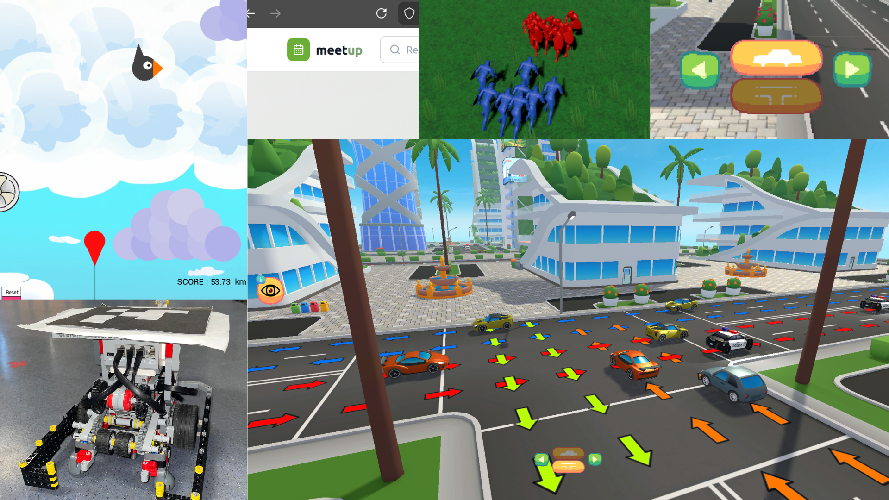

Étudiant à l'Université Claude Bernard Lyon 1, je me spécialise dans la conception de systèmes d'IA interactifs et centrés sur l'humain. Passionné par l'informatique affective et les sciences cognitives, je développe des agents intelligents capables de comprendre, d'interagir avec empathie et d'accompagner l'utilisateur.

L'intelligence artificielle ne se limite pas à l'optimisation de calculs abstraits. À la croisée de l'informatique affective, du NLP et de la modélisation cognitive, je m'intéresse à la manière dont la technologie peut comprendre les états émotionnels et interagir de façon pertinente et bienveillante avec l'utilisateur.
Mon objectif est de concevoir des architectures (notamment multi-agents et basées sur les LLM) qui agissent comme de véritables médiateurs : des systèmes éthiques capables d'écouter, de reformuler et de favoriser la prise de recul ou le bien-être cognitif, sans jamais chercher à se substituer à l'humain.
Compréhension des émotions et interaction centrée sur l'humain
Agents conversationnels, écoute active et accompagnement
Orchestration d'agents intelligents et prise de décision
Garde-fous, explicabilité et vulgarisation scientifique
Développement d'algorithmes décisionnels (C#) et conception d'une simulation interactive en environnement 3D (Unity) pour véhicules autonomes. J'ai documenté ce travail sous deux angles complémentaires : une démonstration technique de la simulation et une vidéo de vulgarisation scientifique expliquant la logique décisionnelle de l'IA à un public non expert (démonstration concrète de ma capacité de médiation et d'explicabilité).
Développement en C# d'un système multi-agents simulant des affrontements tactiques en équipe. Implémentation de comportements autonomes, de stratégies de groupe émergentes et d'un protocole de communication inter-agents.
Conception et programmation en Python d'un robot physique (Lego) capable de jouer au football de manière 100 % autonome : perception de l'environnement en temps réel et prise de décision dynamique (attaque/défense) sans contrôle externe.
Conception et développement web full-stack (HTML/CSS, JavaScript, SQL) d'une application d'organisation et de planification d'événements. Projet réalisé en méthodologie Agile au sein d'une équipe de 6 développeurs.
Développement de nouvelles fonctionnalités logicielles, résolution de bugs et participation active aux phases de tests et d'intégration au sein d'une équipe fonctionnant en méthode Agile.
Accueil, écoute et orientation personnalisée du public. Pratique directe du conseil et de la recommandation d'œuvres (musicales et littéraires) adaptée aux attentes des visiteurs.
Intérêt marqué pour les mécanismes psychologiques, le bien-être et la narration interactive, complété par une pratique musicale personnelle (piano, guitare).